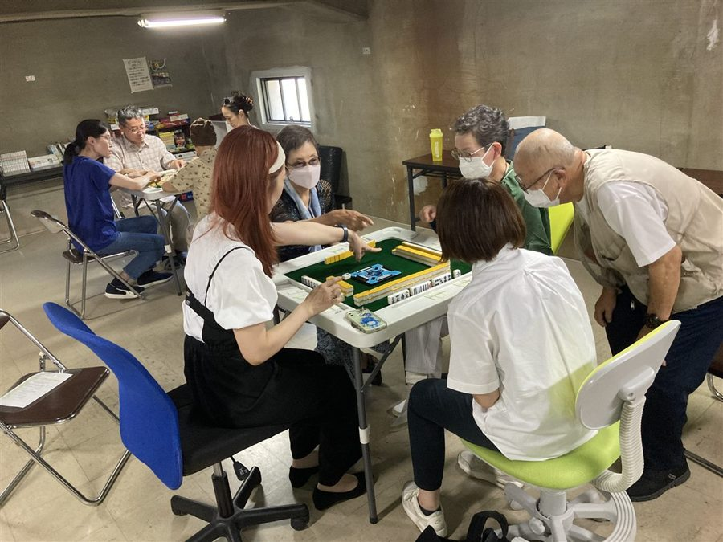
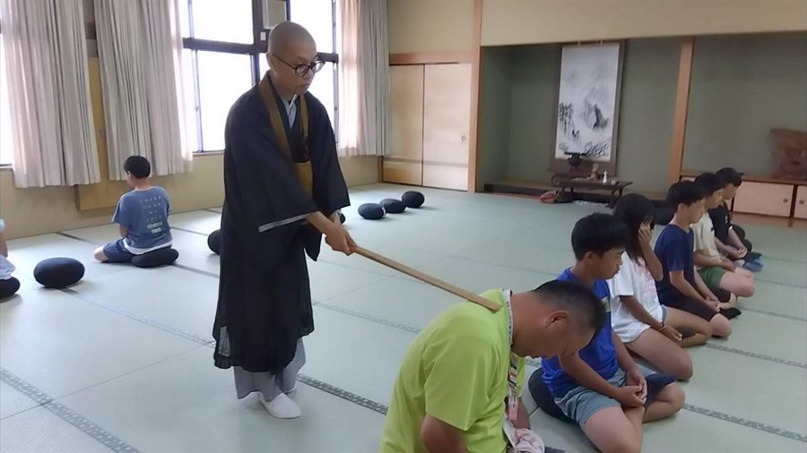
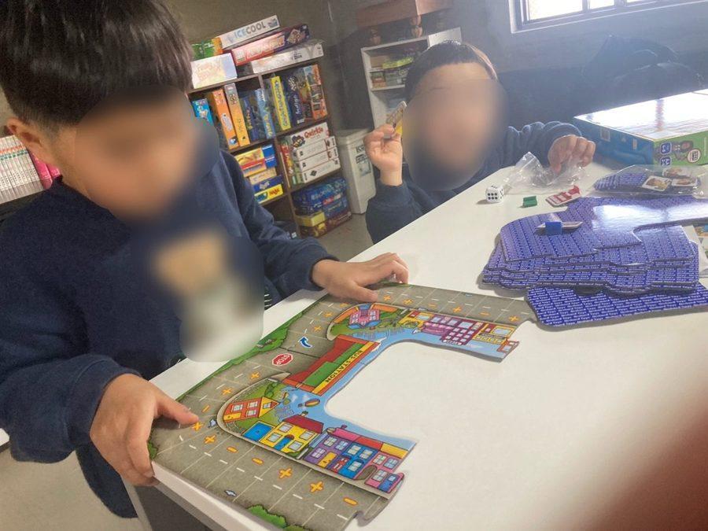
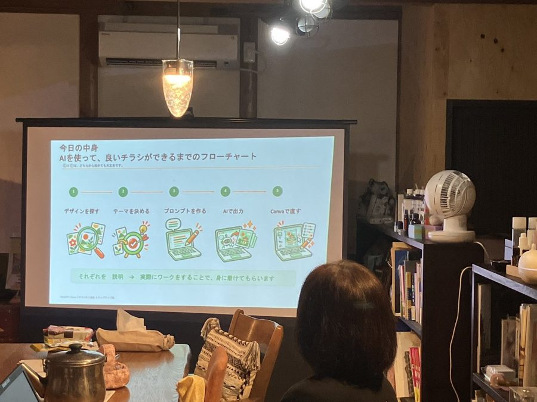

SERVICE
サービス
中心は「場をひらく」と「続く形にする」の2つです。公式LINE・ホームページの制作もお受けしています。
01 出張して、場をひらく



健康麻雀
会を開く／大会の企画・運営（組み合わせ、点数表、進行まで）／初めての方への講座。卓と牌を持って伺うので、会場に道具がなくても開けます。麻雀を知らない方も遊べる「4枚麻雀」の体験もできます。
座禅・写経・仏教カフェ
住職が伺います。座蒲や鐘など、お寺の道具を持って行きます。お寺に来ていただく形もできます。
子どもの遊び
ボードゲーム会、謎解き・脱出ゲーム、学童・児童館への出張あそび。学年の幅が広くても、組を分けてから合流させる形で、一緒に遊べるように組みます。
向いている依頼の例
料金
内容・準備の量・人数・移動の距離で変わります。交通費・印刷物・材料費が要るときは、事前にお伝えします。謎解きを新しく作る場合は、別にご相談します。
料金は、内容をうかがってからお伝えします。料金の目安は、準備ができしだい、このページに載せます。
02 続く形にする（研修・講座・講演）

担い手の方が、自分たちで続けられるようにするための研修・講座です。
- 地域活動のはじめ方：大きく始めず、一人でも回せる大きさで始めて、続ける話
- チラシ作り：ChatGPTとCanvaで、告知の紙を自分で作れるようにする回
- 公式LINEの使い方：お知らせを届ける道具としての、基本の使い方
内容・時間・対象に合わせて組み立てます。パソコンやスマホに自信がない方に向けた回もできます。1回2時間で組むことが多いです。
向いている依頼の例
料金
行政・学校・団体で講師料の規定がある場合は、その規定に合わせて内容を調整します。
料金は、内容をうかがってからお伝えします。料金の目安は、準備ができしだい、このページに載せます。
03 相談にのる
これから始めたい。人が集まらない。続けるのがしんどい。そうした段階のご相談をお受けします。場所（箱）・関わる人（ひと）・道具や連絡手段（もの）の順に、何が足りていて、何が止まっているかを一緒に整理します。
向いている依頼の例
団体の方は、お会いして、またはオンラインで。個人の方は、オンラインの個別相談（30分）もあります。
料金は、内容をうかがってからお伝えします。料金の目安は、準備ができしだい、このページに載せます。
04 つくる（公式LINE・ホームページ）
- 公式LINE：開設から、リッチメニュー（トーク画面の下に出るボタン）まで
- ホームページ：1ページのホームページ
作り方
- 会って、聞いて、その場で作ります
- お店・団体のアカウントで作ります。こちらの手を離れても、そちらのものとして残ります
- 画像は、編集できるデータごとお渡しします
- 直し方を、その場で一度一緒にやります
料金
| 公式LINE | 30,000円開設・基本設定（2026年12月までのお申し込み） |
|---|---|
| ＋リッチメニュー | 5,000円トーク画面の下のボタン |
| ＋アイコン | 5,000円 |
| ホームページ | 80,000円から1ページ |
- 作る日にお店で一緒に作る時間（2時間まで）は、料金に含みます。2時間を超えた分は、1時間3,000円です。
- 作るかどうかを決める前の相談で伺う場合は、1回5,000円です。
- ホームページはCanvaで作ります。あとからご自身で直せます。公開は無料のアドレス（〇〇.my.canva.site）です。お店独自のアドレスにする場合は、Canvaの有料プランとドメイン代（年1,000〜3,000円ほど）が、お店側でかかります。
- ホームページの直しは1回まで。文章と写真は、お店側でご用意ください。